Les déterminants du bonheur: une analyse en composante principale
Authors
Noa Le Roux
Gabriel Ammour
Published
February 11, 2022
Les déterminants du bonheur: une analyse en composante principale (ACP)
Ceci n’est qu’un aperçu de l’étude réalisée, vous pouvez trouver l’étude complète dans son format pdf ici. (lien Google Drive)
Note:La plupart du code est caché afin que cela ne prenne pas trop de place sur la page. Si vous souhaitez avoir accès au script R complet, n’hésitez pas à me contacter.
Résumé
L’objectif de l’étude est d’essayer de déterminer les différents facteurs influençant le niveau de bonheur d’un pays. A l’aide de l’Analyse en composantes principales (ACP), nous avons essayé de synthétiser dix variables explicatives en deux grandes variables latentes. Nous sommes arrivés au résultat que le niveau de développement économique et social ainsi que le niveau de libertés individuelles et collectives étaient les deux meilleures composantes pour expliquer le niveau de bonheur d’un pays. Dans un second temps, nous nous sommes aidés de méthodes économétriques - Régression Linéaire Multiple et Régression Logistique Binaire - afin d’évaluer la qualité et l’efficacité de notre modèle.
Corrélations entre les variables explicatives
Code
#CORRELATION ENTRE LIBERTE DE LA PRESSE ET Y----ggplot(base3, aes(press,happiness,color=happiness))+geom_point(size=2,alpha=0.95)+stat_cor(method="spearman",aes(label = ..r.label..))+geom_smooth(method=lm, alpha=0.3,color="black",aes(fill=happiness))+ggtitle("Corrélation entre le niveau de bonheur et de liberté de la presse")+theme(plot.title =element_text(hjust =0.5, face="bold"))+xlab("Niveau de liberté de la presse")+ylab("Niveau de bonheur")#CORRELATION ENTRE LIBERTE D'EXPRESSION ET Y----ggplot(base3, aes(liberte_expression,happiness,color=happiness))+geom_point(size=2,alpha=0.95)+stat_cor(method="spearman",aes(label = ..r.label..))+geom_smooth(method=lm, alpha=0.3,color="black",aes(fill=happiness))+ggtitle("Corrélation entre le niveau de bonheur et de liberté d'expression")+theme(plot.title =element_text(hjust =0.5, face="bold"))+xlab("Niveau de liberté d'expression")+ylab("Niveau de bonheur")#CORRELATION ENTRE LIBERTE D'ASSOCIATION ET Y----ggplot(base3, aes(liberte_association,happiness,color=happiness))+geom_point(size=2,alpha=0.95)+stat_cor(method="spearman",aes(label = ..r.label..))+geom_smooth(method=lm, alpha=0.3,color="black",aes(fill=happiness))+ggtitle("Corrélation entre le niveau de bonheur et de liberté d'association")+theme(plot.title =element_text(hjust =0.5, face="bold"))+xlab("Niveau de liberté d'association")+ylab("Niveau de bonheur")#CORRELATION ENTRE ESPERANCE DE VIE ET Y----ggplot(base3, aes(edv,happiness,color=happiness))+geom_point(size=2,alpha=0.95)+stat_cor(method="spearman",aes(label = ..r.label..))+geom_smooth(method=lm, alpha=0.3,color="black",aes(fill=happiness))+ggtitle("Corrélation entre le niveau de bonheur l'espérance de vie")+theme(plot.title =element_text(hjust =0.5, face="bold"))+xlab("Niveau de l'espérance de vie")+ylab("Niveau de bonheur")#CORRELATION ENTRE PIB/HAB ET Y----ggplot(base3, aes(gdp_capita,happiness,color=happiness))+geom_point(size=2,alpha=0.95)+stat_cor(method="spearman",aes(label = ..r.label..))+geom_smooth(method=lm, alpha=0.3,color="black",aes(fill=happiness))+ggtitle("Corrélation entre le niveau de bonheur et le PIB/Habitant")+theme(plot.title =element_text(hjust =0.5, face="bold"))+xlab("Niveau du PIB/Habitant")+ylab("Niveau de bonheur")#CORRELATION ENTRE accès à l'électricité ET Y----ggplot(base3, aes(elec_access,happiness,color=happiness))+geom_point(size=2,alpha=0.95)+stat_cor(method="spearman",aes(label = ..r.label..))+geom_smooth(method=lm, alpha=0.3,color="black",aes(fill=happiness))+ggtitle("Corrélation entre le niveau de bonheur et le Niveau d'accès à l'électricité")+theme(plot.title =element_text(hjust =0.5, face="bold"))+xlab("Niveau d'accès à l'électricité")+ylab("Niveau de bonheur")#CORRELATION ENTRE school years ET Y----ggplot(base3, aes(school_years,happiness,color=happiness))+geom_point(size=2,alpha=0.95)+stat_cor(method="spearman",aes(label = ..r.label..))+geom_smooth(method=lm, alpha=0.3,color="black",aes(fill=happiness))+ggtitle("Corrélation entre le niveau de bonheur et le nombre d'années d'étude moyen")+theme(plot.title =element_text(hjust =0.5, face="bold"))+xlab("nombre d'années d'étude moyen")+ylab("Niveau de bonheur")#CORRELATION ENTRE mortalité infantile ET Y----ggplot(base3, aes(infant_mort,happiness,color=happiness))+geom_point(size=2,alpha=0.95)+stat_cor(method="spearman",aes(label = ..r.label..))+geom_smooth(method=lm, alpha=0.3,color="black",aes(fill=happiness))+ggtitle("Corrélation entre le niveau de bonheur et la Part des nouveau-nés qui meurent avant d'avoir atteint l'âge de cinq ans.")+theme(plot.title =element_text(hjust =0.5, face="bold"))+xlab("part des nouveau-nés qui meurent avant d'avoir atteint l'âge de cinq ans.")+ylab("Niveau de bonheur")#CORRELATION ENTRE accès à l'eau ET Y----ggplot(base3, aes(not_water,happiness,color=happiness))+geom_point(size=2,alpha=0.95)+stat_cor(method="spearman",aes(label = ..r.label..))+geom_smooth(method=lm, alpha=0.3,color="black",aes(fill=happiness))+ggtitle("Corrélation entre le niveau de bonheur et la part de la population n'ayant pas accès à une source d'eau améliorée")+theme(plot.title =element_text(hjust =0.5, face="bold"))+xlab("Part de la population n'ayant pas accès à une source d'eau améliorée.")+ylab("Niveau de bonheur")#CORRELATION ENTRE unsafe_sanitation ET Y----ggplot(base3, aes(unsafe_sanitation,happiness,color=happiness))+geom_point(size=2,alpha=0.95)+stat_cor(method="spearman",aes(label = ..r.label..))+geom_smooth(method=lm, alpha=0.3,color="black",aes(fill=happiness))+ggtitle("Corrélation entre le niveau de bonheur et le taux de mortalité dû à l'insalubrité des installations sanitaires")+theme(plot.title =element_text(hjust =0.5, face="bold"))+xlab("Taux de mortalité dû à l'insalubrité des installations sanitaires")+ylab("Niveau de bonheur")
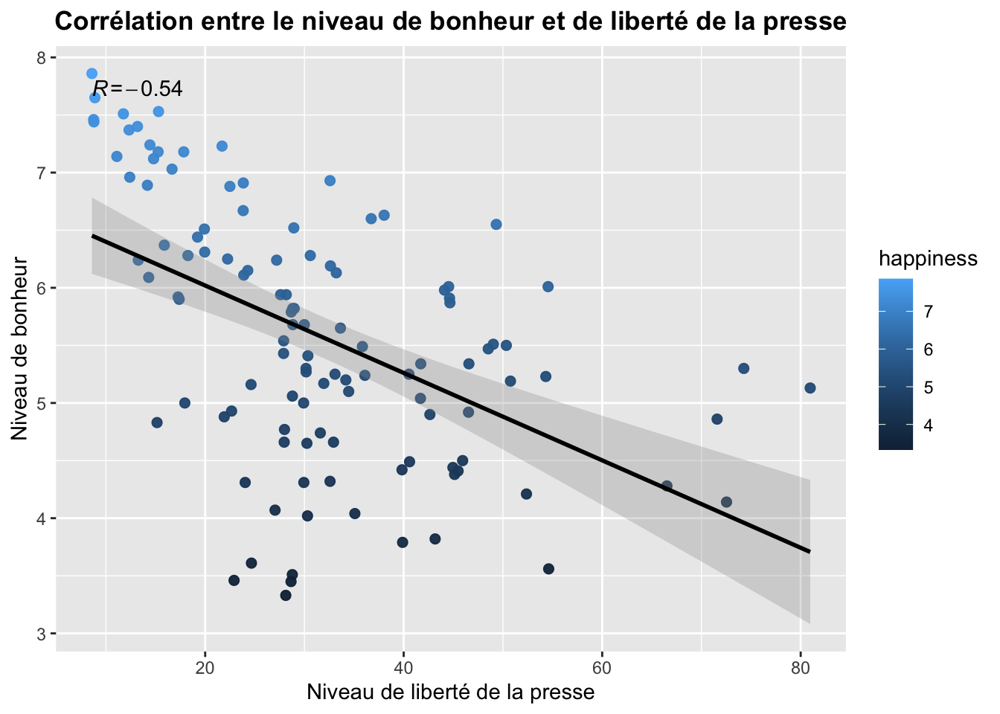
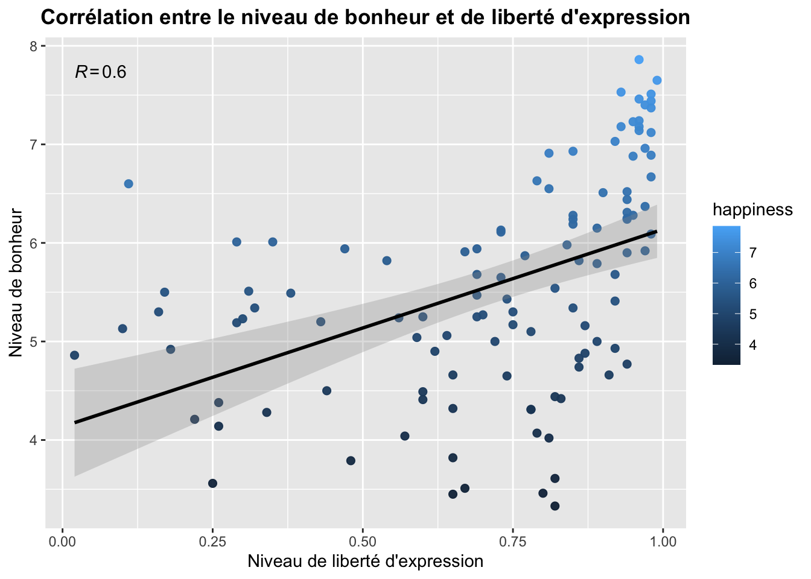
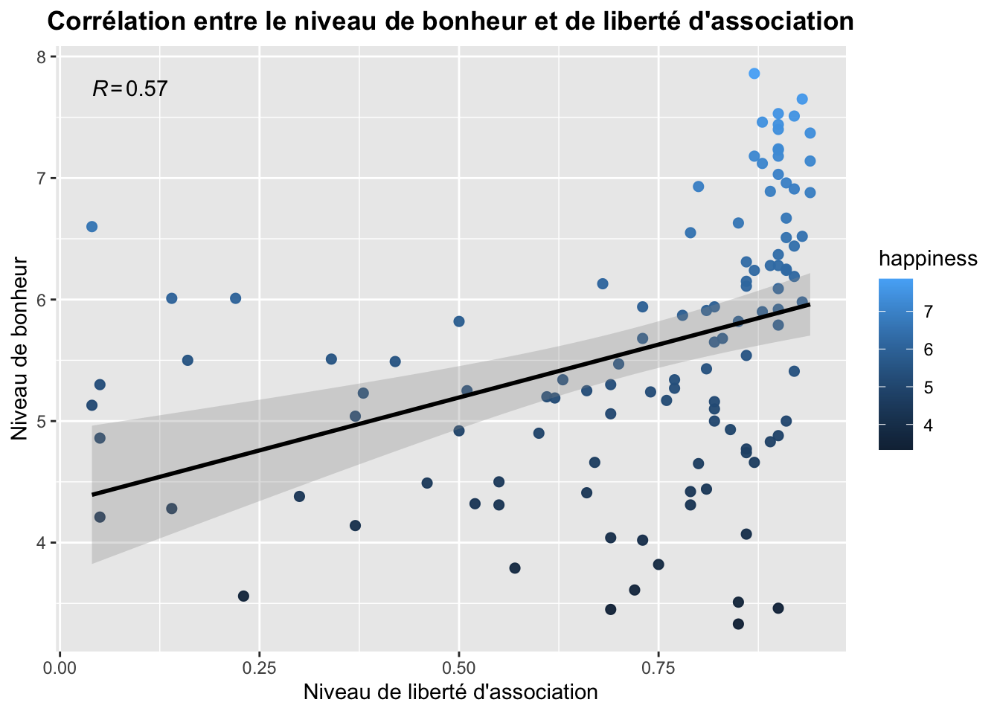
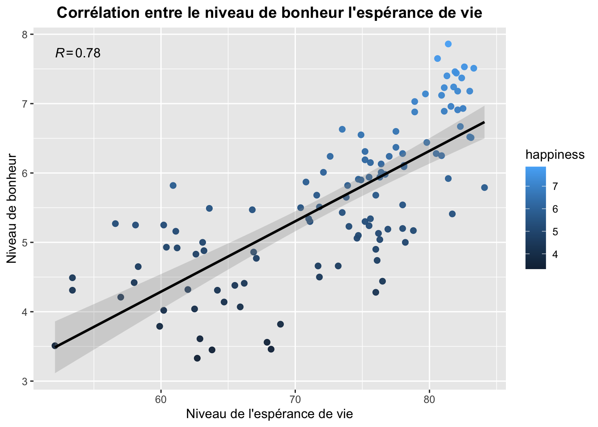
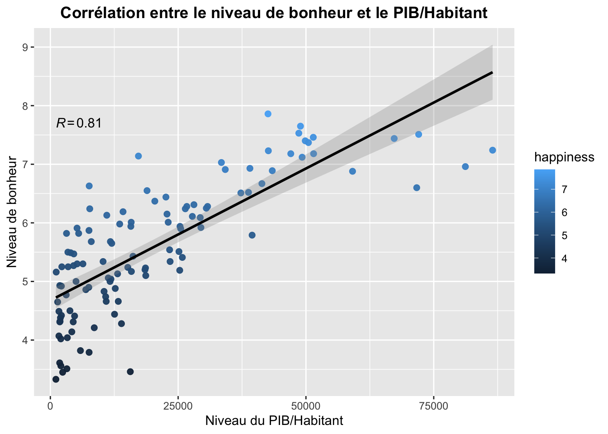
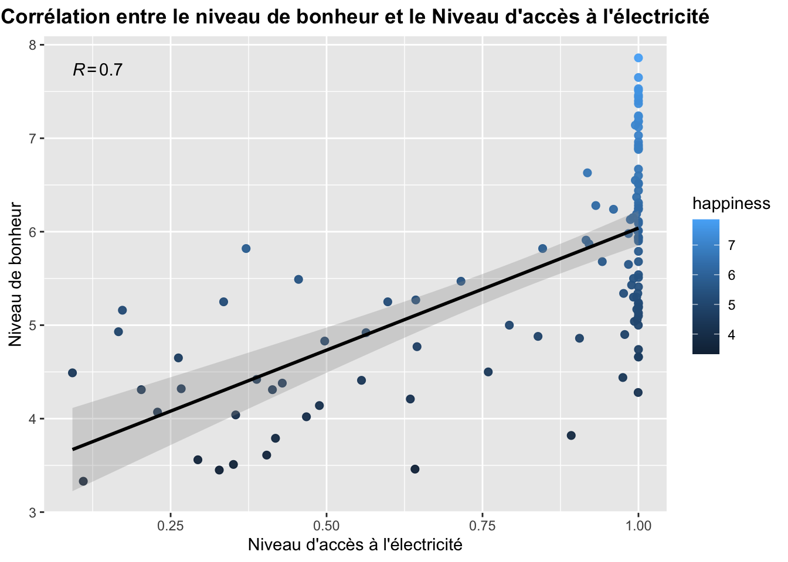
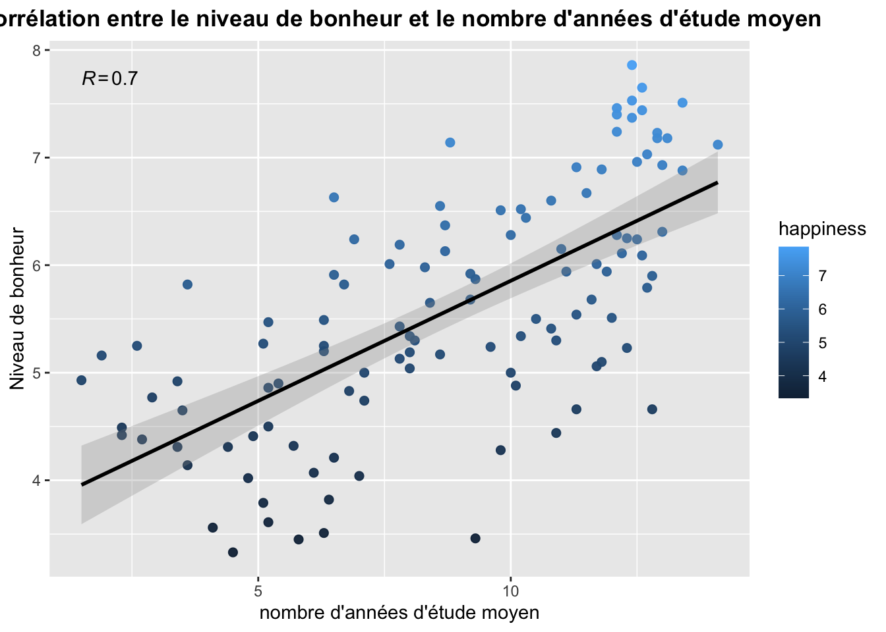
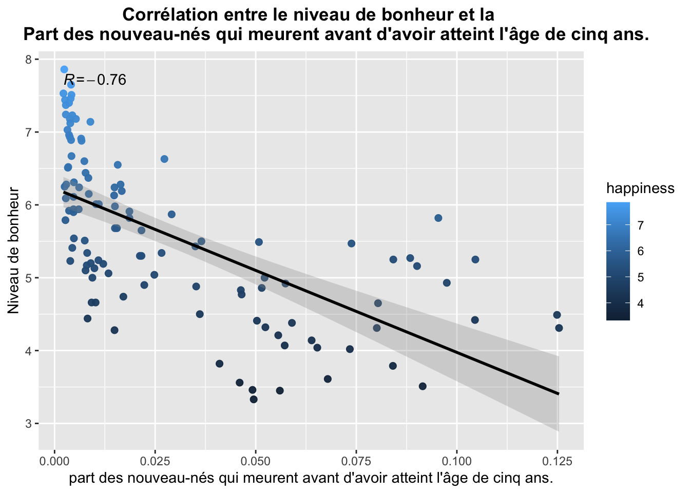
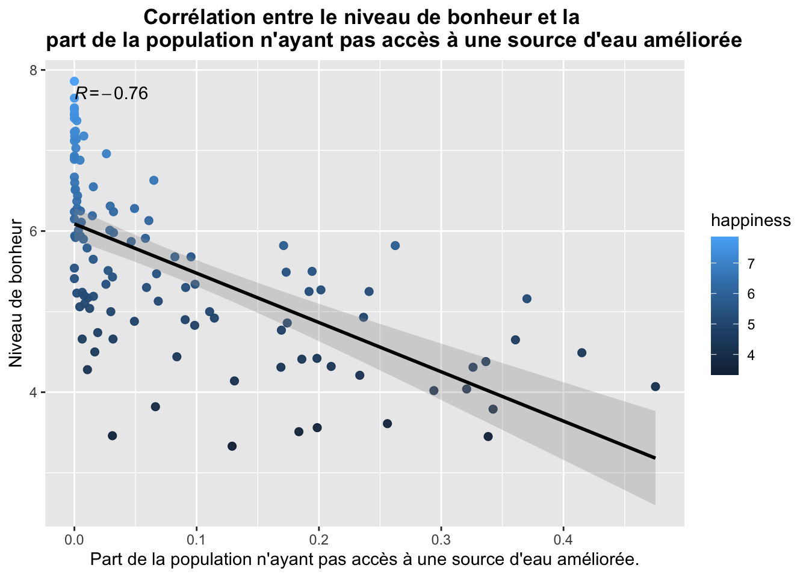
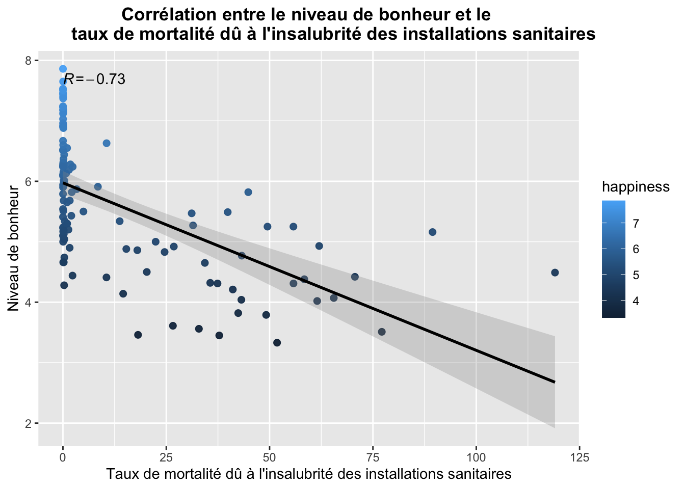
Code
#MATRICE DES CORRELATIONS----Tableau_Corrélation =round(cor(base3[,c(2:12)],use="complete.obs"),2)ggcorrplot(Tableau_Corrélation, hc.order =TRUE,lab =TRUE, type ="lower",outline.col ="white",ggtheme = ggplot2::theme_gray,colors =c("#6D9EC1", "white", "#E46726"))+labs(title ="Matrice des corrélations")
#CERCLE ACP AVEC NOS VARIABLES PERTINENTES -- AXE 1 & 2 fviz_pca_var(res.pca2, col.var="cos2")#CERCLE ACP AVEC NOS VARIABLES PERTINENTES + VAR ILLUS -- AXE 1 & 2 fviz_pca_var(res.pca2_2, col.var="cos2")
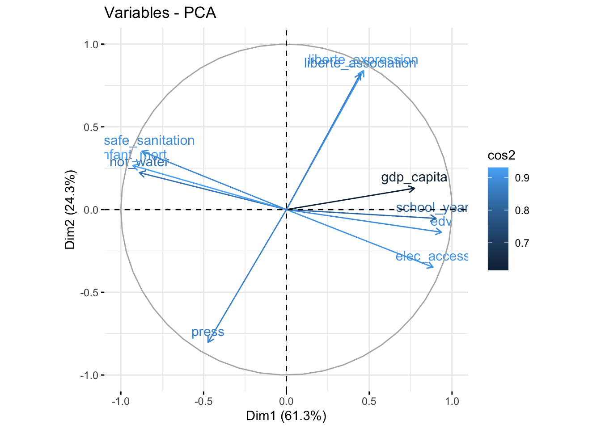
Cercle de corrélation: Modèle final
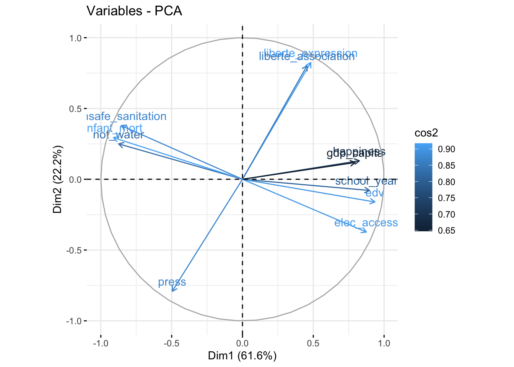
Cercle de corrélation: Modèle final avec la variable illustrative
Projection des individus
Code
#PROJECTION DES INDIVIDUS----coord_individus<-round(res.pca2$ind$coord, 2) contrib_individus<-round(res.pca$ind$contrib, 2) cos2_individus <-round(res.pca$ind$cos2, 2)fviz_pca_ind(res.pca2,col.ind="cos2",gradient.cols=c("#00AFBB", "#E7B800", "#FC4E07"), repel=TRUE, title="projection des pays sur l'axe 1 et 2")
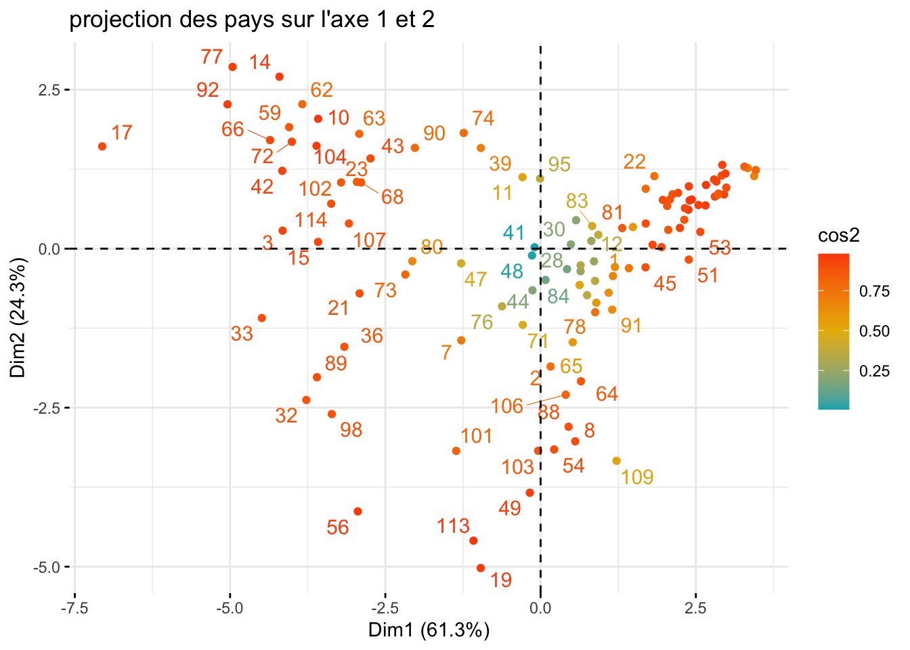
Projection des individus sur les axes 1 & 2
Test stats sur nos 3 modèles linéaires
Après avoir établi nos 3 modèles de régressions linéaires multiples, nous appliquons nos différents tests pour sélectionner le meilleur.
Modèle
\(R^2_{adj}\)
Student
Shapiro
Kolmogorov-Smirnov
Breush-Pagan
1
0.61
\(ß_1\) : 2e-16
\(ß_2\) : 0.0266
0.08
Validé
0.67
Validé
0.13
Validé
2
0.65
\(ß_1\) : 2e-16
\(ß_2\) : 6.56e-05
0.89
Validé
0.99
Validé
0.03
non-validé
3
0.05
\(ß_1\) : 0.16
\(ß_2\) : 0.013
0.01
non-validé
0.78
Validé
6.35e-06
non-validé
Au vu des résultats dans notre tableau, nous pouvons conclure que le modèle 1 reste le meilleur, ce dernier présente un \(R^2\) ajusté élevé, valide les deux tests de normalité ainsi que le test d’homoscédasticité des résidus.
Relation entre la variable illustrative observée et prédite
Projection de vos valeurs observées par rapport aux valeurs prédites
Régression logistique binaire
D’après le RESET test, la forme linéaire de notre modèle n’est pas validé. Nous avons donc décidée de faire une régression logistique binaire:
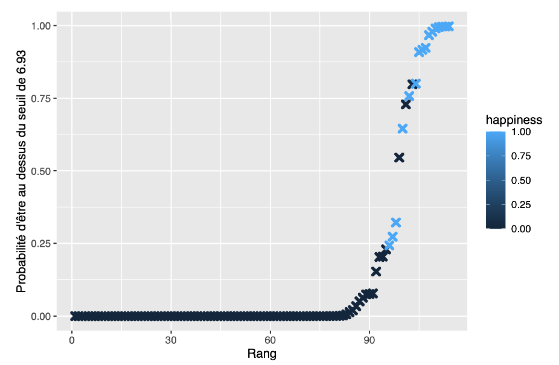
Sur l’abscisse de notre graphique, la probabilité qu’un pays est un seuil supérieur à 6.93 en fonction des résultats de notre régression logistique binaire. Sur l’ordre, nous avons le rang de ces pays en fonction de la probabilité. Plus la probabilité qu’un pays ait un seuil de bonheur supérieur à 6.93 est grande, plus son rang est élevé.
De plus, un code couleur nous indique si le pays à effectivement un niveau de bonheur supérieur au seuil ou non. On remarque qu’avec notre estimation, la Belgique, l’Estonie et les Etats-Unis ont une probabilité supérieure à 50% d’avoir un niveau de bonheur supérieur à 6.93 alors qu’en réalité, ces trois pays ont un niveau inférieur à 6.93.
A l’inverse, Le Royaume-Uni, le Costa-Rica et la République Tchèque qui ont des probabilités relativement faible (~25%) d’avoir un niveau de bonheur supérieur à notre seuil se retrouvent avec un niveau de bonheur réel supérieur à 6.93.
Conclusion
Dans ce dossier, nous avons essayé de déterminer les variables expliquant le niveau de bonheur d’un pays. A l’aide de l’analyse en composantes principales, nous avons réussi à transformer dix variables explicatives en deux variables latentes bien distinctes : Le niveau de développement économique et social et le niveau de liberté individuelle et collective.
A partir de ces deux composantes, nous avons estimé un modèle de régression linéaire multiple entre introduisant le bonheur comme variable illustrative. Les résultats de cette régression se sont avérés plutôt concluants puisque d’une part, le modèle s’est avéré être significatif au seuil de 5%, et de l’autre, ses prédictions sont relativement bonnes.
Enfin, puisque notre modèle n’était pas linéaire, nous avons décidé de compléter notre analyse en effectuant une régression logistique binaire. Cette régression à aboutit à la détermination d’un seuil de bonheur à 6.93 sur l’échelle de Cantril.